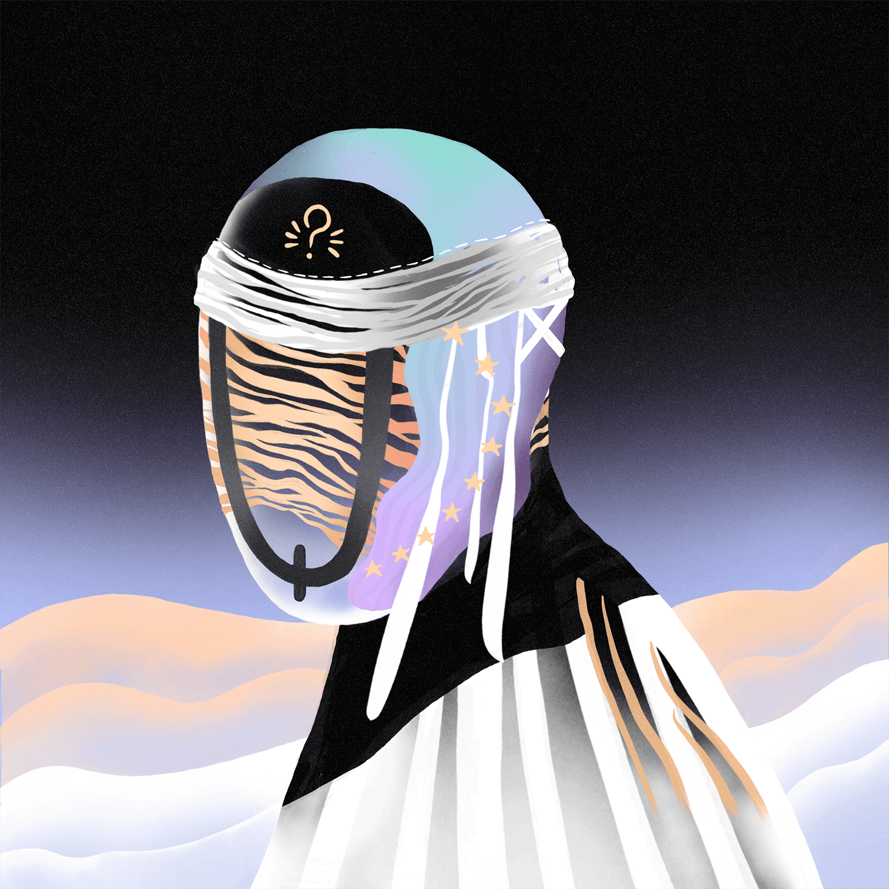
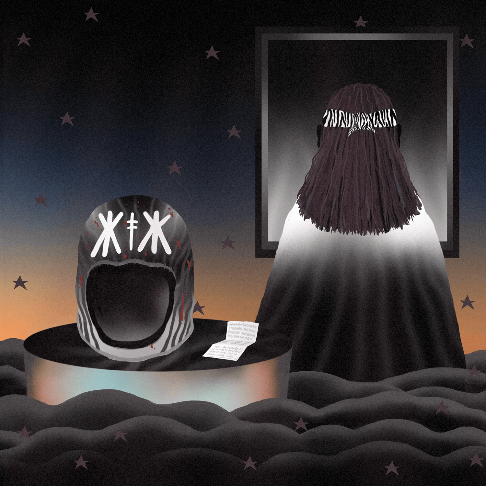
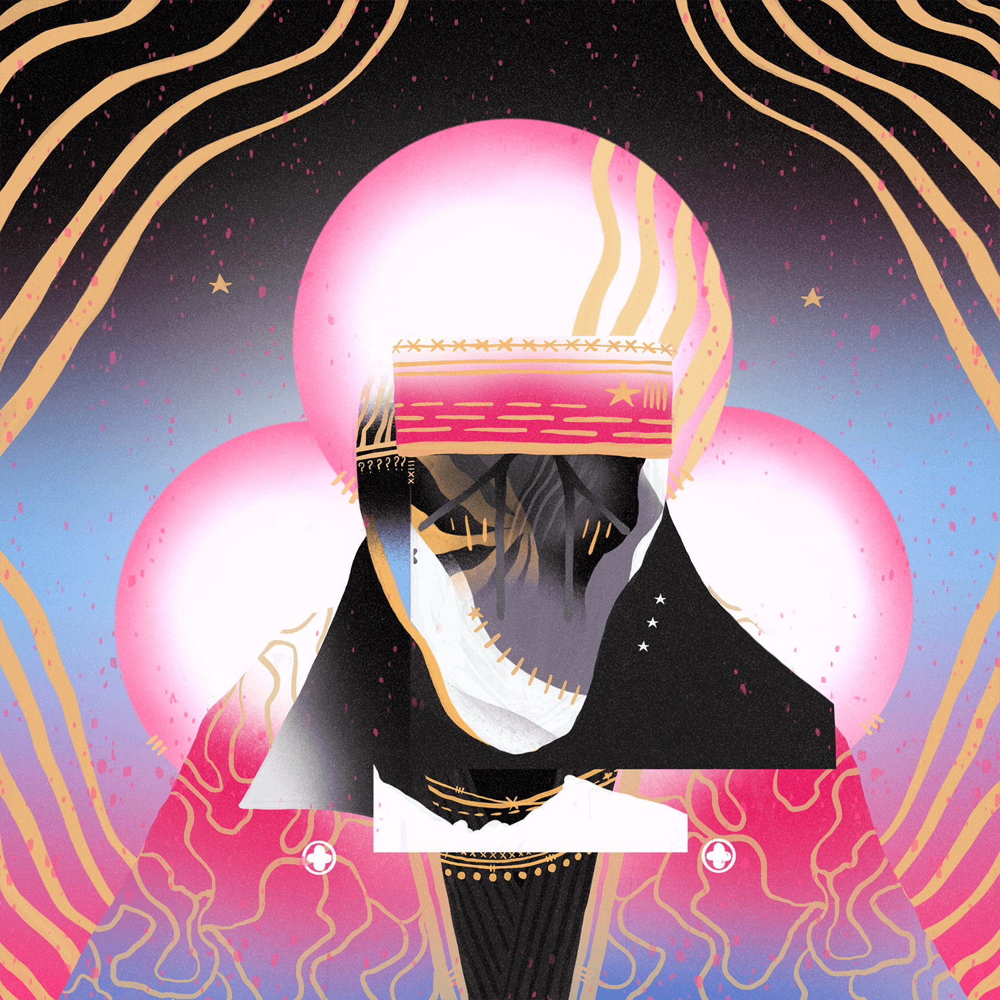

JUNE 2020 — SEPTEMBER 2020
STRIPES, WAVES & STARS
This collection contains the illustrations I’ve made in the last months, strongly characterized by an in-depth stylistic research that involves the addition of new distinct elements such as shaded waves, zebra-like stripes and the addition of decorative stars in the background.
From left to right:
Ho suonato, mo’ canta — Oroscopo — Redenzione — Hanami.
From left to right:
Ho suonato, mo’ canta — Oroscopo — Redenzione — Hanami.



